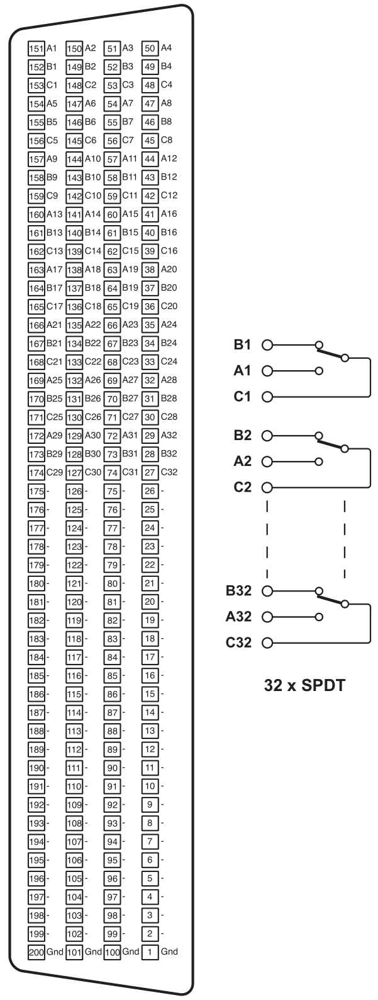
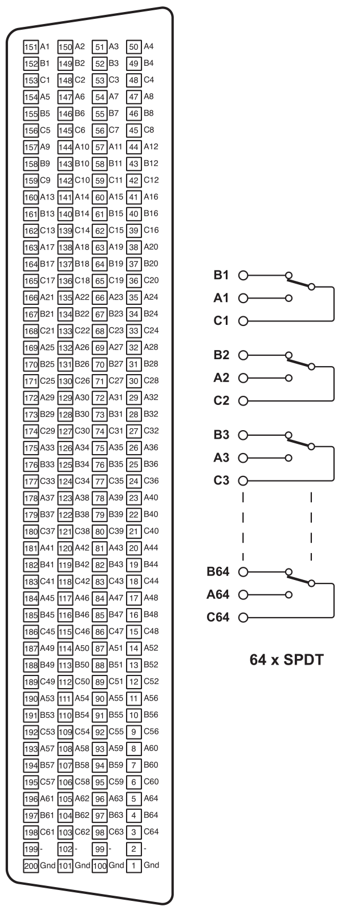
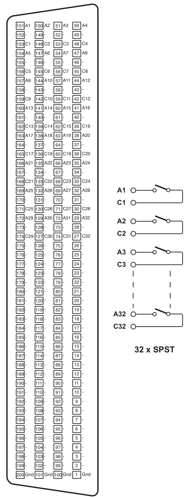
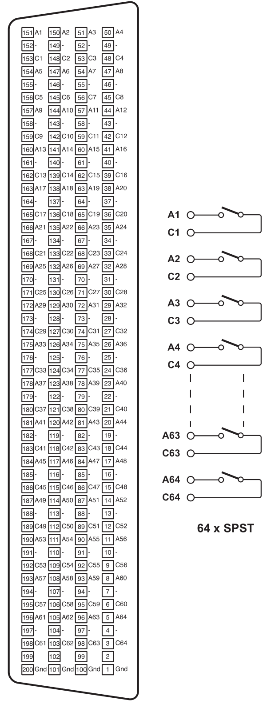
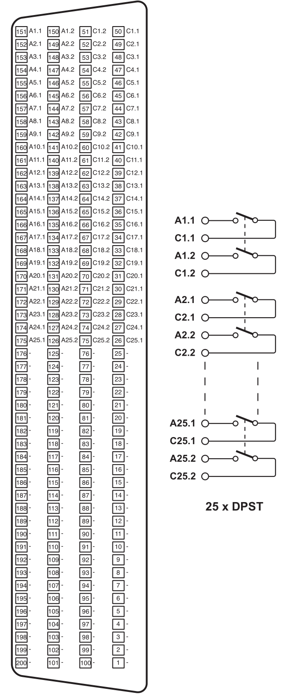
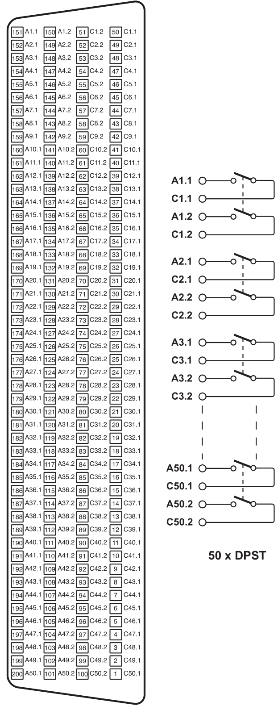
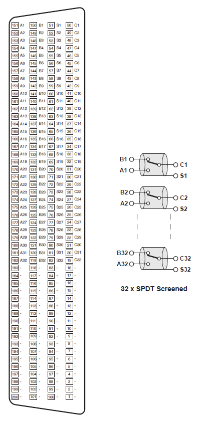
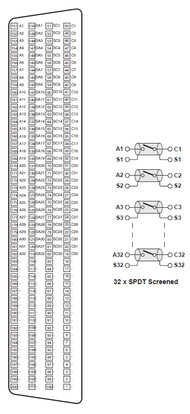
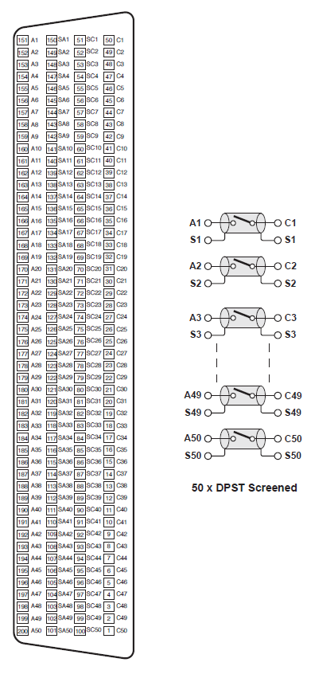

IO94X Pin Mapping — Reference information about the I/O module connector
Reed Relay Module IO941-SPDT-32 (32-channel, single pole double throw) 200 pin female LFH connector. The schematics on the right show the relays in their default states.

Reed Relay Module IO941-SPDT-64 (64-channel, single pole double throw) 200 pin female LFH connector. The schematics on the right show the relays in their default states.

Reed Relay Module IO941-SPST-32 (32-channel, single pole single throw) 200 pin female LFH connector. The schematics on the right show the relays in their default states.

Reed Relay Module IO941-SPST-64 (64-channel, single pole single throw) 200 pin female LFH connector. The schematics on the right show the relays in their default states.

Reed Relay Module IO941-DPST-25 (25-channel, double pole single throw) 200 pin female LFH connector. The schematics on the right show the relays in their default states.

Reed Relay Module IO941-DPST-50 (50-channel, double pole single throw) 200 pin female LFH connector. The schematics on the right show the relays in their default states.

Reed Relay Module IO941-SPDT-32 (32-channel, single pole double throw) 200 pin female LFH connector. The schematics on the right show the relays in their default states.

Reed Relay Module IO941-SPST-32 (32-channel, single pole single throw) 200 pin female LFH connector. The schematics on the right show the relays in their default states.

Reed Relay Module IO941-SPST-S-50 (50-channel, single pole single throw) 200 pin female LFH connector. The schematics on the right show the relays in their default states.
